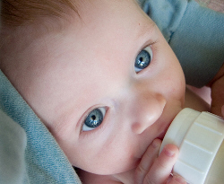

Breastfeeding vs Bottle Feeding:
Let the Battle Begin
I have received more angry complaints about this article on the breastfeeding vs bottle feeding battle than on any other I've written. Why? Because it's honest.
I'm willing to throw it out all on the table and discuss the real pros and cons of breastfeeding.
It's my goal to provide you with a honest play-by-play analysis of both side's main arguments.
I've breastfed three babies. I've formula-fed three babies.
I've got nothing to lose by sharing the blessings and the curses of both breast and bottle feeding.

Breastfeeding vs Bottle Feeding:
Breasts Are Best!
Why start with the breasts? Is there an agenda here? Nope. But there is some truth in the "breasts are best" mantra.
The pros of breastfeeding...
Yes, there is something wonderous about that white miracle fluid. There really is nothing exactly like it in the world.
 {Photo by Raphael Goetter}
{Photo by Raphael Goetter}
Formulas are getting better and better every year...but still fall short of the nutritioual mega-punches your breasts can produce.
Here are some of the boosts your breastmilk provides.
Breastfed babies tend to be sick less often in the first year.
They swallow less air while feeding, requiring fewer burps.
Breastmilk has natural laxatives that (usually) prevents constipation.
Breastfeeding also benefits you. The hormone that causes your body to produce milk is also the hormone that jump-starts the shrinking of your uterus to its pre-preganancy size.
Breastfeeding is also a calorie burning powerhouse. The weight loss benefit is one many mothers look forward to. (But not every mother gets!)
In many cases, a lot of the supplies needed to breastfeed (ex: pumps) can be deducted from your taxes as a medical expense. There are several free tax calculators available online that can help make sense of the numbers. Or if you’re really having trouble, try consulting an accountant.
Perhaps, for me, the largest advantage and biggest pro in the breastfeeding vs bottle feeding battle was looking down at that suckling little face, knowing that I was nurturing her body and her soul out of myself.
It's a very weird thing...that somehow feels completely natural.

The cons of breastfeeding...
Because breastmilk is so easily digested, your baby will burn through it more quickly, requring more breastfeeding sessions. For this reason, formula fed babies tend to sleep through the night faster than breastfed babies.
Heather's Hints
See my sleep trick for breastfeeding moms.
If you will be going back to work, breastfeeding can be difficult to balance (although not impossible). Breastfeeding at work takes more...well...work.
If you are taking medication for a chronic condition, check with your doctor before deciding to breastfed. It may simply not be an option for you. What you put in your mouth often ends up in her mouth. Which is why many mothers choose to avoid certain foods.
Finally, breast feeding is a skill to be mastered. If you decide to breastfeed your baby, prepare yourself for a learning curve.
In the Breastfeeding vs Bottle Feeding Battle, simplicity may be your trump card. After all, holding a bottle takes no skill at all.
However, let me encourage you to give breast feeding the good 'ole college try. It's very hard to go back to breastfeeding if you don't start right away.Unless you have a medical condition, there's nothing to lose by trying. But if you don't try, you'll always have the coulda, woulda, shoulda's sitting on your shoulder.
Breastfeeding vs Bottle Feeding:
Formula is Fantastic!
In this, the 21st Century, we are blessed with some pretty amazing formulas. Today's formulas are well-formulated.
Although they don't have the antibodies that breastmilk has, they run a close second in nutritional content. In some rare cases, with babies allergic to breastmilk, formula is a better choice!
The pros of bottle feeding...
 {Photo by pfly}
Just as you can cuddle and bond with your baby while breastfeeding, you can do the same with the bottle.
In fact, everyone can bond using the bottle, without requiring you to pump. (Woo hoo!)
Bottle feeding is also beneficial because you can see exactly how much food your infant is getting. Determining the same for breastfed babies takes more effort.
You also never have to worry about your diet affecting your baby. No more worrying about whether or not the broccoli you ate for lunch will come back to haunt your baby at 2 in the morning.
The cons of bottle feeding...
Like I mentioned before, once you've started with a bottle, it's difficult to change your mind and go back to breast feeding.
And those missing antibodies I briefly mentioned? They protect your newborn, whose immune system is weak and still developing, from many common sicknesses.
If you choose to bottle feed exclusively, keep a sharp eye for the warning signs of ear infections, since they tend to be more common in formula fed babies.
Formula also produces some ba-nasty poops. Get yourself a well-sealed diaper pail and some air fresheners, because you'll definitely need them. This high-stink-factor is due to the nutritional by-products not being thoroughly absorbed into the bowel.
Breastmilk, on the other hand, is absorbed extremely well. Only small amounts of undigested matter passes into the stool, which de-stinkifies (yes, I made that word up) the poop.
The Financials on Formula
Assuming that someone didn't know where to find free baby formula, one number cruncher estimated that the yearly cost of formula is approximately $1,733.75. That's not chump change!
Find this calculator at http://politicalcalculations.blogspot.com/2009/04/cost-of-breastfeeding-vs-formula.html
Another con to bottle feeding is the hassle factor. Rather than rolling over and unbuttoning your shirt, those late night feedings will include a trip down to the kitchen, and the preparation of a bottle of formula - easy tasks during the day, arduous tasks late at night.
Breastfeeding vs Bottle Feeding:
Can't We All Just be Friends?
Or perhaps you're more the pacifist. Perhaps the whole "breastfeeding vs bottle feeding" battle is too violent for you.
Luckily, there's room for both at the negotiating table. Many mothers (myself included) have chosen to "Combo Feed" and offer both breast and bottle.
Yes, you can breast feed AND formula feed.
Surprsing, isn't it?
For those intrigued, let me offer a few guidelines.
If your baby is less than 4 weeks old, try NOT to combo feed. These a crucial milk-establishing weeks.
If you're struggling with your milk supply, try using a supplemental nurser, which lets you provide formula on the breast. This way your breast is still being stimulated.
Try to add only one bottle in a 24 hour period, usually for the late-night (11 pm-ish) feeding.
Once your milk is flowing steadily, you can supplement more than one bottle a day. If you feel your supply is shrinking, stop offering the bottle to drive your milk supply up again.
There is a technique difference between sucking on a breast and sucking on a bottle.
In breastfeeding, the baby will literally strip the milk out through the nipple with his tongue. With a bottle, the tongue serves to limit the flow of milk from the bottle's nipple.
The older the baby when a bottle is introduced, the less likely "nipple confusion" will be a problem. Then again, every baby is different. If your infant seems to struggle accepting a bottle, it may not be him. It may be that you've just got to find the right bottle.
The more you bottle-feed, the less milk your body will produce...which means more formula...which means less breastmilk...and so on and so forth. A proper balance will need to be found.
At 6-8 weeks old, my husband and I would offer a single bottle of formula at the 11pm-ish feeding. It helped fill their tummies longer, and helped them sleep through the night at 6 weeks (Lauren), 10 weeks (Elena) and 8 weeks (Bella).
Other Helpful Related Articles
It's time to stop the emotional manipulation and throw guilt out the window.
If you can breastfeed, I strongly encourage you to give a try. Breastmilk is uniquely designed to provide your baby the perfect mixer of nutrients.
But if you can't? Don't waste any tears over it.
There are just as many well-loved and insanely intelligent formula fed babies at Harvard than breastfed ones.
Both options have pros, and both have cons. I'll leave it to you to decide which side ultimately wins the battle of breastfeeding vs bottle feeding for your baby.
warm regards

The top nursing myths exposed!
Knowing the difference between myth and fact can make all the difference between a fantastic or frustrating breastfeeding experience.
How do I know this? Because I believed each one of these, and my first nursing experience was a nightmare as a result.
Not your mother's breastfeeding bras...
You're going to have to wear your breastfeeding bra nearly 24/7.
Keep those sisters comfy, cozy, and looking pretty-garsh-darn good in some beautiful nursing bras.
Yes, they're out there. If you know where to look.


 7 Ways to Determine an Ear Infection
7 Ways to Determine an Ear Infection
 5 Tips to Fight the Cold Crusties
5 Tips to Fight the Cold Crusties
 Free $32 Nursing Cover with code ONEFREE!
Free $32 Nursing Cover with code ONEFREE!

 Does a Belly Binder help C-Section Recovery?
Does a Belly Binder help C-Section Recovery?
 This Month's Coupon Codes for Gap, Children's Place, and Others
This Month's Coupon Codes for Gap, Children's Place, and Others

I just subscribed to the site, and I'm very happy I did. I have worked in the medical field for several years and love to have good resources for when things come up...
~ Crystal S.
What a great site and thanks for having it available!
~ Bernadette W.
I'm very excited to start receiving the newsletter. I've checked out your site a couple times and I loooovve how it's arranged, your language, and tips - it's great!
~ Emily N.
Heather, I can't express how happy I am I discovered your site!
~ Liza T.
Thank you Heather, for your wonderful newsletter. There is always something new!
~ Desiree T.
I'm a 1st time young mom, 23 and single, so I have found very very helpful...I can't seem to stop myself telling everyone I know about you, some thought you were my mom!
~ Vuyiswa N.
Your website is very helpful and I discovered a couple of great online stores. 'Cause I'm not a big reader, it is very nice that I can find the most important information through your
website.
~ Tonya G.
Thanks Heather! Your Milestone eBook is SO detailed and so correct. My son is doing all or most of the things and many are not mentioned in the usual books/sites. Great job and keep it up!
~ Anwesha C.
Thanks so much for creating such an AWESOME website. I really appreciate your sense of humor and real writing style.
~ Andrea Z.
My baby refused all bottles until you showed me the MAM bottle. Thank you so much for the recommendation. I wouldn't have known about them if not for your website.
~ Jennifer at Sweet Lilly Confections


Copyright © 2007-2011. All rights reserved.
Remember...when in doubt, give Doc a shout!